Three Densities, One RealNVP Budget
Abstract
An invertible model can have correct likelihoods and poor generated samples. This controlled native C++ study fits the same 266-value RealNVP architecture separately to banana, eight-Gaussian and checkerboard observations. All three runs retain identical initial weights, batch orders and three-epoch budgets, with separate stores and Adam states. The complete editable program preserves all 144 optimizer writes, both actual Jacobians and 3,072 latent-only samples. Final NLLs are 2.760811806, 3.523986816 and 3.139697790 nats per two-coordinate row. Only 15.7227% of eight-Gaussian samples lie within three sigma of a mode, although every mode has a positive count; only 42.5781% of checkerboard samples lie on its support. Source fidelity and invertibility checks pass while those quality limitations remain visible.
Separate density correctness from distribution quality
The native model is the bounded four-coupling RealNVP already developed in the
[affine-coupling report](real_nvp_density.mepml). Each block preserves coordinate
a and changes b to b exp(s(a))+t(a), with s=.8 tanh(raw_scale). Its triangular
Jacobian has log determinant s(a), and inversion uses (b-t(a))exp(s(a)).
Four alternating 1>16 tanh->2 conditioners plus a positive global diagonal
scale give *266 learned values in 17 tensors*. The Gaussian base yields
The determinant is recomputed on the current forward or inverse path. The mathematical inverse has an exact algebraic form; Float32 evaluation still rounds. A well-implemented bijection guarantees tractable density evaluation, not that a 48-step fit recovers every mode or a discontinuous support boundary.
#include <dm/dm.hpp>
int main(){
std::filesystem::create_directories("build");dm::graphics::Diagram d(28,1150);
dm::graphics::DiagramNodeStyle s;s.width=10;s.height=5;s.font_size=32;
d.node("data",{-24,0},"3 analytic families\nExplicit Gaussian triples",s)
.node("fits",{-11,0},"3 separate RealNVPs\nSame weights / budget",s)
.node("density",{2,0},"Gaussian likelihood\nActual Jacobian checks",s)
.node("samples",{15,0},"Invert all prior rows\nNo data feedback",s)
.node("quality",{28,0},"Curvature / modes\nSupport leakage",s)
.edge("data","fits").edge("fits","density").edge("density","samples").edge("samples","quality")
.save_svg("build/study_method.svg");
}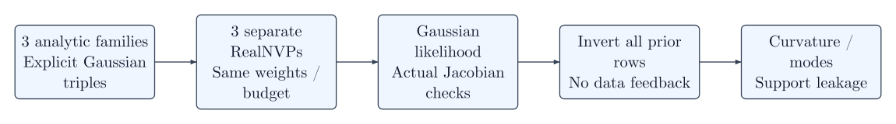
Hand-check one affine coupling before fitting
Keep b=.5 and activate one native conditioner unit. The following deterministic example checks five mapped points, both Jacobian rows, the inverse and the point-dependent log determinant. It uses Double arithmetic and no fitted data.
#include <dm/dm.hpp>
int main(){
namespace n=dm::nn;namespace m=n::models;auto type=n::DType::Float64;n::ParameterStore p(1,type);
auto a=n::from_vector(std::vector<double>{-2,-1,0,1,2},{5});auto x=n::stack({a,n::full({5},.5,type)},1).requires_grad_();
m::RealNvpCoupling(p,x,0);for(auto name:p.names())p.set(name,n::zeros(p.at(name).shape(),type));
std::vector<double> w(16),bias(16),heads(32);w[0]=.7;bias[0]=.1;heads[0]=.2;heads[1]=.3;
p.set("coupling0/hidden/W",n::from_vector(w,{1,16}));p.set("coupling0/hidden/b",n::from_vector(bias,{16}));
p.set("coupling0/heads/W",n::from_vector(heads,{16,2}));p.set("coupling0/heads/b",n::from_vector(std::vector<double>{.05,-.1},{2}));
auto o=m::RealNvpCoupling(p,x,0),rec=m::RealNvpCoupling(p,o.value,0,true);
auto h=n::tanh(.7*a+.1),raw=.2*h+.05,s=.8*n::tanh(raw),t=.3*h-.1;
auto hs=.7*(1.-n::square(h)),ds=.8*(1.-n::square(n::tanh(raw)))*.2*hs,dt=.3*hs;
auto changed=n::select(o.value,1,1),expected=.5*n::exp(s)+t;
auto j0=n::grad(n::sum(n::slice_axis(o.value,1,0,1)),{x},n::GradOptions{true,false,false})[0];
auto j1=n::grad(n::sum(n::slice_axis(o.value,1,1,2)),{x})[0];
auto determinant=n::select(j0,1,0)*n::select(j1,1,1)-n::select(j0,1,1)*n::select(j1,1,0);
auto slope=n::select(j1,1,0),theory=.5*n::exp(s)*ds+dt;
if(n::max(n::abs(changed-expected)).item()>1e-14||n::max(n::abs(rec.value-x)).item()>1e-14||n::max(n::abs(slope-theory)).item()>1e-14||n::max(n::abs(determinant-n::exp(s))).item()>1e-14)throw std::runtime_error("Worked affine/Jacobian");
auto axis=n::arange(0,257,1,type)/64.-2.;auto grid=n::stack({axis,n::full({257},.5,type)},1);
auto curve=n::select(m::RealNvpCoupling(p,grid,0).value,1,1);
dm::graphics::RPlot::create().lines(axis.to_vector<double>(),curve.to_vector<double>(),"b exp(s) + t",{37,99,235})
.points(a.to_vector<double>(),std::vector<double>(5,.5),"Original b",{100,116,139},5)
.points(a.to_vector<double>(),changed.to_vector<double>(),"Native affine map",{220,38,38},4)
.y_limits(-.1,1.3).x_label("Conditioning coordinate a").y_label("Other coordinate")
.title("A bounded affine coupling changes local volume").save_svg("build/study_coupling_toy.svg");
std::print("| a | Changed b | Log scale s | Actual determinant |\n|---:|---:|---:|---:|\n");
auto av=a.to_vector<double>(),yv=changed.to_vector<double>(),sv=s.to_vector<double>(),dv=determinant.to_vector<double>();
for(int i=0;i<5;++i)std::print("|{:.0f}|{:.9f}|{:.9f}|{:.9f}|\n",av[i],yv[i],sv[i],dv[i]);
}| a | Changed b | Log scale s | Actual determinant |
|---|---|---|---|
| -2 | 0.095083994 | -0.097390270 | 0.907201883 |
| -1 | 0.216464592 | -0.045877539 | 0.955158925 |
| 0 | 0.458623020 | 0.055855851 | 1.057445243 |
| 1 | 0.677021762 | 0.144638262 | 1.155621463 |
| 2 | 0.771114179 | 0.181604137 | 1.199139405 |
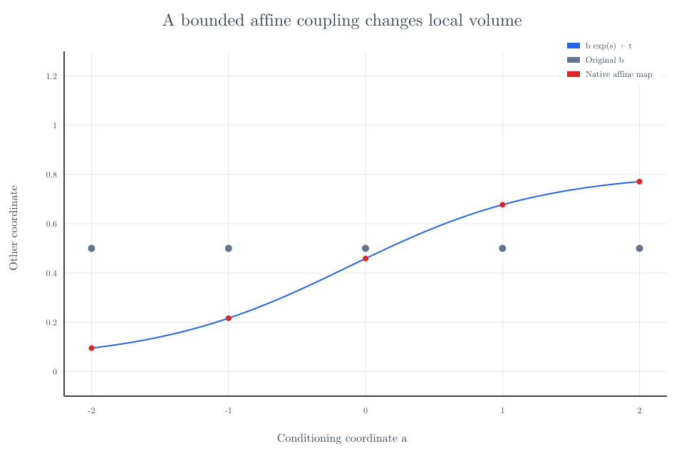
Construct three different laws from the same explicit triples
Let u,v,w be independent standard normals and Phi(z)=.5 erfc(-z/sqrt(2)). The source uses Double scalar arithmetic, then casts observations once to Float32. For banana, x=(u,v+.5(u²−1)); the third coordinate is unused and the saved component is -1. Its inverse has determinant one.
For the other two families, c=min(7,int(8 Phi(w))) selects one of eight equally likely components. Eight Gaussians use centers (2 cos(2 pi c/8),2 sin(2 pi c/8)) and add independent noise (.15u,.15v). Its true log density uses all eight mixture terms with fixed weights 1/8, not empirical component frequencies.
Checkerboard uses row=c/2, col=2(c mod2)+(row mod2), then x=(col−2+Phi(u),row−2+Phi(v)). Eight unit cells have density 1/8, with support [-2,2)² and even floor(x0+2)+floor(x1+2) parity. Off support the analytic log probability is *negative infinity*, meaning exactly zero PDF. Do not replace it with a finite plotting floor. Extreme CDF tails and final Float32 rounding can put transformed points on cell boundaries; the API does not clip them.
The following worked bank uses five banana coordinates and eight explicitly chosen component quantiles. Ring points and checker points are at component centers because u=v=0. These deterministic fixtures explain the law; they are separate from the original seeded pools that follow.
#include <dm/dm.hpp>
int main(){
namespace n=dm::nn;namespace m=n::models;auto type=n::DType::Float64;
auto u=n::from_vector(std::vector<double>{-2,-1,0,1,2},{5});
auto banana=m::FlowStudyPoints(n::stack({u,n::zeros({5},type),n::zeros({5},type)},1),0,type);
auto wanted=n::from_vector(std::vector<double>{1.5,0,-.5,0,1.5},{5});
if(!n::equal_bits(n::select(banana.points,1,1),wanted))throw std::runtime_error("Five banana coordinates");
auto w=n::from_vector(std::vector<double>{-1.6,-.9,-.5,-.15,.15,.5,.9,1.6},{8});
auto triples=n::stack({n::zeros({8},type),n::zeros({8},type),w},1);
auto ring=m::FlowStudyPoints(triples,1,type),checker=m::FlowStudyPoints(triples,2,type);
auto labels=n::cast(n::arange(0,8),n::DType::Int32);
if(!n::equal_bits(ring.components,labels)||!n::equal_bits(checker.components,labels))throw std::runtime_error("All eight components");
if(n::max(n::abs(m::FlowStudyLogProbability(checker.points,2)+std::log(8.))).item()>1e-15)throw std::runtime_error("Checker center truth");
auto axis=n::arange(0,129,1,type)/32.-2.;auto curve=m::FlowStudyPoints(n::stack({axis,n::zeros({129},type),n::zeros({129},type)},1),0,type).points;
auto p0=dm::graphics::RPlot::create();p0.lines(axis.to_vector<double>(),n::select(curve,1,1).to_vector<double>(),"v=0 curve",{37,99,235})
.points(u.to_vector<double>(),wanted.to_vector<double>(),"Five native checks",{220,38,38},5);
auto angle=n::arange(0,129,1,type)*(2*std::acos(-1.)/128.);
auto p1=dm::graphics::RPlot::create();p1.lines((2*n::cos(angle)).to_vector<double>(),(2*n::sin(angle)).to_vector<double>(),"Radius2",{148,163,184})
.points(n::select(ring.points,1,0).to_vector<double>(),n::select(ring.points,1,1).to_vector<double>(),"8 centers",{220,38,38},5);
auto p2=dm::graphics::RPlot::create();std::vector<double> cells{-1.5,-.5,.5,1.5};std::vector<std::vector<double>> z(4,std::vector<double>(4));
for(int x=0;x<4;++x)for(int y=0;y<4;++y)z[x][y]=(x+y)%2==0?.125:0;
p2.image(cells,cells,z,dm::graphics::terrain_colors(32),0,.2)
.points(n::select(checker.points,1,0).to_vector<double>(),n::select(checker.points,1,1).to_vector<double>(),"8 centers",{220,38,38},5);
auto format=[](auto plot,const char* title){return plot.margins(78,22,54,70).x_limits(-3.5,3.5).y_limits(-3.5,3.5).x_label("x0").y_label("x1").title(title);};
dm::graphics::RLayout::create(1,3).add(format(p0,"Banana: five exact checks")).add(format(p1,"Eight Gaussian centers")).add(format(p2,"Eight allowed checker cells"))
.size(1650,574).fit_panels().save_svg("build/study_laws.svg");
n::save_npz("build/study_laws.npz",{{"banana_points",banana.points},{"banana_curve",curve},{"ring_points",ring.points},{"checker_points",checker.points},{"component",ring.components}});
std::print("| Family | Component | x0 | x1 | True log density |\n|---|---:|---:|---:|---:|\n");
for(int kind=0;kind<3;++kind){auto out=kind==0?banana:kind==1?ring:checker;auto values=out.points.to_vector<double>(),logp=m::FlowStudyLogProbability(out.points,kind).to_vector<double>();auto c=out.components.to_vector<std::int32_t>();
for(int i=0;i<int(c.size());++i)std::print("|{}|{}|{:.9f}|{:.9f}|{:.9f}|\n",kind,c[i],values[i*2],values[i*2+1],logp[i]);}
}| Family | Component | x0 | x1 | True log density |
|---|---|---|---|---|
| 0 | -1 | -2.000000000 | 1.500000000 | -3.837877066 |
| 0 | -1 | -1.000000000 | 0.000000000 | -2.337877066 |
| 0 | -1 | 0.000000000 | -0.500000000 | -1.837877066 |
| 0 | -1 | 1.000000000 | 0.000000000 | -2.337877066 |
| 0 | -1 | 2.000000000 | 1.500000000 | -3.837877066 |
| 1 | 0 | 2.000000000 | 0.000000000 | -0.123078638 |
| 1 | 1 | 1.414213562 | 1.414213562 | -0.123078638 |
| 1 | 2 | 0.000000000 | 2.000000000 | -0.123078638 |
| 1 | 3 | -1.414213562 | 1.414213562 | -0.123078638 |
| 1 | 4 | -2.000000000 | 0.000000000 | -0.123078638 |
| 1 | 5 | -1.414213562 | -1.414213562 | -0.123078638 |
| 1 | 6 | -0.000000000 | -2.000000000 | -0.123078638 |
| 1 | 7 | 1.414213562 | -1.414213562 | -0.123078638 |
| 2 | 0 | -1.500000000 | -1.500000000 | -2.079441542 |
| 2 | 1 | 0.500000000 | -1.500000000 | -2.079441542 |
| 2 | 2 | -0.500000000 | -0.500000000 | -2.079441542 |
| 2 | 3 | 1.500000000 | -0.500000000 | -2.079441542 |
| 2 | 4 | -1.500000000 | 0.500000000 | -2.079441542 |
| 2 | 5 | 0.500000000 | 0.500000000 | -2.079441542 |
| 2 | 6 | -0.500000000 | 1.500000000 | -2.079441542 |
| 2 | 7 | 1.500000000 | 1.500000000 | -2.079441542 |
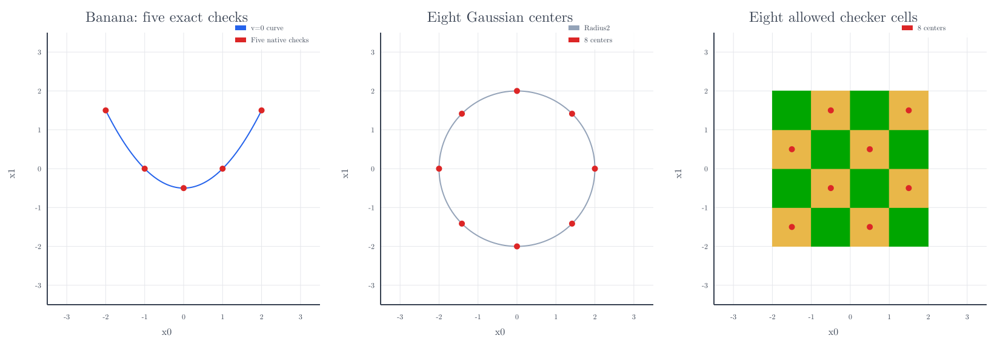
Count the executed architecture and preserve the common budget
Each conditioner has 16 hidden weights,16 hidden biases,32 head weights and two head biases: 66 values. Four give 264; global log_scale adds two. Initialize hidden kernels with normal deviation .3 and bias .05, head kernels .01 and bias zero; warm the forward graph in block order, then initialize scale zero. The same native seed 9403 is used independently for all three stores. The optional original TensorFlow initial-array directory is absent, so the original auto default selects native initialization. This is source replay, not a claim of bit-identical TensorFlow random initialization.
#include <dm/dm.hpp>
int main(){
namespace n=dm::nn;n::ParameterStore p(9403);
n::Module model([&](const n::Tensor& x){auto o=n::models::RealNvpDensity(p,x);
n::model_stage("Affine blocks 0 / 1",x,o.coupling1);n::model_stage("Affine blocks 2 / 3",o.coupling1,o.unscaled);
return n::model_stage("Positive diagonal scale",o.unscaled,o.latent);},"Each family:266 values /17 leaves");
n::ModelPlotOptions options;options.detail=n::ModelPlotDetail::Blocks;options.sizing.minimum_extent=2;options.sizing.max_planes=2;
auto figure=model.plot(n::zeros({1,2}),options);if(figure.parameter_count()!=266||p.size()!=17)throw std::runtime_error("Executed census");figure.save_svg("build/study_network.svg");
}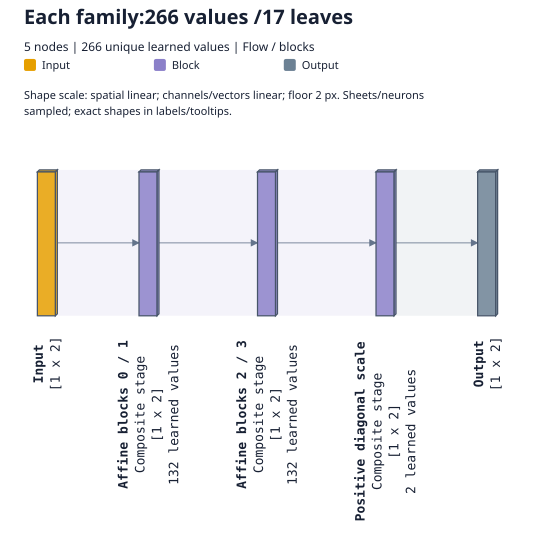
Keep every fitting and sampling step editable
For each family, generate *512 fit,128 validation,128 test* triples using midpoint-MT19937 Box-Muller Double banks with seeds 9203/9209/9221. Retain the complete flat pair stream across three-coordinate row boundaries. Grouping those same words into two-dimensional rows would produce different banana observations from this study. Save all bases, component labels and source IDs; IDs add family offsets 0/100000/200000 and split offsets 0/10000/20000. Components and IDs are audit metadata, never model inputs. No external dataset or substituted observation pool is used.
Each independent BatchOrder(512,32,10421) gives 16 complete batches per epoch. Fit exactly three epochs of Adam(.003), betas (.9,.999),epsilon 1e-8, no weight decay: 48 writes per family,144 total. Epoch three is fixed final, even though banana validation NLL is lower at epoch two. There is no per-family tuning or test-selected checkpoint. The prior is the same 1,024 two-dimensional Gaussian rows (seed 9257,final Float32 cast) for all families; only latent values enter inverse sampling.
The model uses rounded_constant=true to retain the source Float32 log(2*pi) constant. Analytic truths and fit-only Gaussian baselines use full Double. MLE moments divide by N, with source serial Double order preserved using native cumulative sums. Native C++ APIs implement model math, the pure data transforms, reference laws and sample diagnostics. The complete program owns all loops, gradients, Adam writes, restored stores and sampling banks. Flat results own their storage; reference/data/diagnostic helpers intentionally return detached values, while model density paths remain differentiable.
#include <dm/dm.hpp>
namespace n=dm::nn;namespace m=n::models;namespace fs=std::filesystem;
using T=n::Tensor;using A=std::map<std::string,T>;
void Require(bool ok,const std::string& what){if(!ok)throw std::runtime_error(what);}
void Save(const fs::path& file,const A& fields){
n::NamedTensors named;for(const auto& [key,value]:fields)named.emplace_back(key,value);
n::save_npz(file.string(),named);
}
A Weights(const n::ParameterStore& p){
A out;for(const auto& name:p.names())out.emplace(name,p.at(name).detach().clone());return out;
}
bool Equal(const A& a,const A& b){
if(a.size()!=b.size())return false;
for(const auto& [key,value]:a)if(!b.count(key)||!n::equal_bits(value,b.at(key)))return false;
return true;
}
T Column(const T& x,int k){return n::slice_axis(x,1,k,k+1);}
A Evaluate(n::ParameterStore& p,const T& x){
auto input=x.detach().clone().requires_grad_();auto path=m::RealNvpDensity(p,input);
auto rec=m::RealNvpInverse(p,path.latent);auto density=m::NormalFlowDensity(path.latent,path.logdet,true);
A out{{"latent",path.latent},{"unscaled",path.unscaled},{"reconstruction",rec.value},
{"base_log_probability",density.base_log_probability},{"log_probability",density.log_probability},
{"forward_logdet",path.logdet},{"inverse_logdet",rec.logdet},{"loss",density.loss},
{"coupling0",path.coupling0},{"coupling_logdet0",path.coupling_logdet0},{"coupling_scale0",path.coupling_scale0},{"coupling_shift0",path.coupling_shift0},{"coupling1",path.coupling1},{"coupling_logdet1",path.coupling_logdet1},{"coupling_scale1",path.coupling_scale1},{"coupling_shift1",path.coupling_shift1},{"coupling2",path.coupling2},{"coupling_logdet2",path.coupling_logdet2},{"coupling_scale2",path.coupling_scale2},{"coupling_shift2",path.coupling_shift2},{"coupling3",path.coupling3},{"coupling_logdet3",path.coupling_logdet3},{"coupling_scale3",path.coupling_scale3},{"coupling_shift3",path.coupling_shift3}};
for(int k=0;k<2;++k)out["jacobian_row"+std::to_string(k)]=n::grad(n::sum(Column(path.latent,k)),{input},n::GradOptions{true,false,false})[0];
for(auto& [key,value]:out)value=value.detach().contiguous();return out;
}
A Sample(n::ParameterStore& p,const T& z){
auto prior=z.detach().clone().requires_grad_();auto inv=m::RealNvpInverse(p,prior);
auto roundtrip=m::RealNvpDensity(p,inv.value).latent;
A out{{"prior",z},{"samples",inv.value},{"prior_roundtrip",roundtrip},{"inverse_logdet",inv.logdet}};
for(int k=0;k<2;++k)out["inverse_jacobian_row"+std::to_string(k)]=n::grad(n::sum(Column(inv.value,k)),{prior},n::GradOptions{true,false,false})[0];
for(auto& [key,value]:out)value=value.detach().contiguous();return out;
}
T Loss(n::ParameterStore& p,const T& x){auto o=m::RealNvpDensity(p,x);return m::NormalFlowDensity(o.latent,o.logdet,true).loss;}
A NamedGradients(n::ParameterStore& p,const std::vector<T>& gradients){
A out;auto names=p.names();for(std::size_t i=0;i<names.size();++i)out[names[i]]=gradients[i];return out;
}
// Preserve the source's serial Double reductions without hiding numerical math
// in host loops: divide each row first, native cumulative sum, then last row.
T SerialMean(const T& values){return n::select(n::cumsum(n::cast(values,n::DType::Float64)/double(values.size(0)),0),0,values.size(0)-1);}
T ActualLogdet(const A& fields,const std::string& prefix){
auto a=n::cast(fields.at(prefix+"jacobian_row0"),n::DType::Float64);
auto b=n::cast(fields.at(prefix+"jacobian_row1"),n::DType::Float64);
auto det=n::reshape(Column(a,0)*Column(b,1)-Column(a,1)*Column(b,0),{-1});
Require(n::min(det).item()>0,"Orientation-preserving actual Jacobian");return n::log(det);
}
int main(){
n::set_num_threads(4);fs::path study="build/flow_density_2d";fs::create_directories(study);
std::ofstream summary(study/"summary.tsv");summary.precision(17);
summary<<"dataset\ttest_nll\ttrue_test_nll\tfit_gaussian_nll\tsample_diagnostic\n";
const std::vector<std::string> variants{"banana","eight_gaussians","checkerboard"};
for(int kind=0;kind<3;++kind){
fs::path root=study/variants[kind];fs::create_directories(root);
A data;std::vector<T> pools;
for(int split=0;split<3;++split){
const int rows=split?128:512,seed=split==0?9203:split==1?9209:9221;
const std::string name=split==0?"fit":split==1?"validation":"test";
auto base=m::GaussianNoise({3},rows,seed);auto observations=m::FlowStudyPoints(base,kind);auto points=observations.points;
data[name+"_components"]=observations.components;
data[name+"_base"]=base;data[name+"_points"]=points;
data[name+"_source_ids"]=n::cast(n::arange(kind*100000+split*10000,kind*100000+split*10000+rows),n::DType::Int32);
pools.push_back(points);
}
// Explicit latent-only sampling bank: all 1024 rows, generated once with seed9257.
auto prior=n::cast(m::GaussianNoise({2},1024,9257),n::DType::Float32);
data["sample_prior"]=prior;Save(root/"data.npz",data);
std::ofstream protocol(root/"source_protocol.json");
const char* protocols[]={R"JSON({"distribution":"SYNTHETICbanana3Dseed","base":"standardGaussian3D","fit":512,"validation":128,"test":128,"seeds":[9203,9209,9221],"component_rule":"floor(8*Phi(base2))","source_id_family_offset":0,"sample_prior_seed":9257,"sample_prior_count":1024,"epochs_per_dataset":3})JSON",R"JSON({"distribution":"SYNTHETICeightGaussians","base":"standardGaussian3D","fit":512,"validation":128,"test":128,"seeds":[9203,9209,9221],"component_rule":"floor(8*Phi(base2))","source_id_family_offset":100000,"sample_prior_seed":9257,"sample_prior_count":1024,"epochs_per_dataset":3})JSON",R"JSON({"distribution":"SYNTHETICcheckerboard","base":"standardGaussian3D","fit":512,"validation":128,"test":128,"seeds":[9203,9209,9221],"component_rule":"floor(8*Phi(base2))","source_id_family_offset":200000,"sample_prior_seed":9257,"sample_prior_count":1024,"epochs_per_dataset":3})JSON"};
protocol<<protocols[kind]<<'\n';protocol.close();
n::ParameterStore parameters(9403);
{n::NoGradGuard guard;m::RealNvpDensity(parameters,n::zeros({1,2}));m::RealNvpInverse(parameters,n::zeros({1,2}));}
Require(parameters.count()==266&¶meters.size()==17,"266 values /17 leaves");
Save(root/"initial_arrays.npz",Weights(parameters));Save(root/"initial_outputs.npz",Evaluate(parameters,pools[2]));
n::OptimizerConfig config;config.kind=n::OptimizerKind::Adam;config.beta1=.9;config.beta2=.999;config.epsilon=1e-8;
n::Optimizer optimizer(parameters,.003,config);n::BatchOrder order(512,32,10421);
std::ofstream history(root/"history.tsv"),batches(root/"batches.tsv");history.precision(17);
history<<"epoch\tvalidation_nll\tvalidation_mean_forward_logdet\n";batches<<"epoch\tstep\trow\n";
int step=0;T first;
for(int epoch=1;epoch<=3;++epoch){
order.begin_epoch();
for(;;){
auto rows=order.next();if(rows.empty())break;auto batch=n::take_rows(pools[0],rows);
if(step==0){first=batch;Save(root/"first_batch.npz",{{"points",batch}});Save(root/"first_forward.npz",Evaluate(parameters,batch));}
// Complete fitting step: native likelihood, explicit reverse-mode partials,
// caller-owned Adam write. No model helper owns any update or fitting loop.
auto loss=Loss(parameters,batch);auto gradients=n::grad(loss,parameters.parameters());
auto named=NamedGradients(parameters,gradients);Save(root/("batch"+std::to_string(step)+"-gradient.npz"),named);
if(step==0)Save(root/"initial_gradients.npz",named);
optimizer.step(gradients);
Save(root/("batch"+std::to_string(step)+"-after.npz"),Weights(parameters));
Save(root/("batch"+std::to_string(step)+"-iterations.npz"),{{"iterations",n::from_vector(std::vector<std::int64_t>{optimizer.iterations()},{1})}});
if(step==0)Save(root/"first_after.npz",Weights(parameters));
for(auto row:rows)batches<<epoch<<'\t'<<step<<'\t'<<row<<'\n';++step;
}
auto validation=Evaluate(parameters,pools[1]);
history<<epoch<<'\t'<<validation.at("loss").item<float>()<<'\t'<<SerialMean(validation.at("forward_logdet")).item()<<'\n';
Save(root/("epoch"+std::to_string(epoch)+"_arrays.npz"),Weights(parameters));
Save(root/("epoch"+std::to_string(epoch)+"_validation.npz"),validation);
}
Require(step==48&&optimizer.iterations()==48,"All48 Adam writes");history.close();batches.close();
parameters.save((root/"final.npz").string());
Save(root/"final_gradients.npz",NamedGradients(parameters,n::grad(Loss(parameters,first),parameters.parameters())));
n::ParameterStore deployed(9403);
{n::NoGradGuard guard;m::RealNvpDensity(deployed,n::zeros({1,2}));m::RealNvpInverse(deployed,n::zeros({1,2}));}
deployed.load((root/"final.npz").string(),true);Require(Equal(Weights(parameters),Weights(deployed)),"Bit-exact weight restore");
auto before=Weights(deployed);auto output=Evaluate(deployed,pools[2]);
Save(root/"outputs.npz",output);Save(root/"model_arrays.npz",Weights(deployed));
auto samples=Sample(deployed,prior);Require(Equal(samples,Sample(deployed,prior)),"Repeat inverse sampling and Jacobians bit exact");
Save(root/"samples.npz",samples);auto sample_density=Evaluate(deployed,samples.at("samples"));Save(root/"sample_density.npz",sample_density);
auto roundtrip=n::abs(n::cast(output.at("reconstruction"),n::DType::Float64)-n::cast(pools[2],n::DType::Float64));
auto prior_error=n::abs(n::cast(samples.at("prior_roundtrip"),n::DType::Float64)-n::cast(prior,n::DType::Float64));
auto actual=ActualLogdet(output,"");auto inverse_actual=ActualLogdet(samples,"inverse_");
auto det_error=n::abs(actual-n::cast(output.at("forward_logdet"),n::DType::Float64));
auto inverse_error=n::abs(inverse_actual-n::cast(samples.at("inverse_logdet"),n::DType::Float64));
auto base=m::StandardNormalLogProbability(n::cast(prior,n::DType::Float64));
auto normalization=n::abs(n::cast(sample_density.at("log_probability"),n::DType::Float64)+n::cast(samples.at("inverse_logdet"),n::DType::Float64)-base);
Require(n::max(roundtrip).item()<5e-6&&n::max(prior_error).item()<5e-6,"Both roundtrips");
Require(n::max(det_error).item()<5e-6&&n::max(inverse_error).item()<5e-6,"Both analytic/actual logdets");
Require(n::max(n::abs(output.at("forward_logdet")+output.at("inverse_logdet"))).item()<5e-6,"Per-point reconstruction logdet cancellation");
Require((n::max(output.at("forward_logdet"))-n::min(output.at("forward_logdet"))).item()>1e-5,"Spatially varying forward logdet");
Require(n::max(normalization).item()<2e-5,"All1024 change-of-variables identities");
auto single=Evaluate(deployed,n::take_rows(pools[2],{0}));
Require(n::max(n::abs(single.at("latent")-n::take_rows(output.at("latent"),{0}))).item()<2e-6,"Single/batch parity");
std::vector<float> grid;for(int y=0;y<128;++y)for(int x=0;x<128;++x){grid.push_back(float((x+.5)/16-4));grid.push_back(float(4-(y+.5)/16));}
auto coordinates=n::from_vector(grid,{128*128,2});auto density=Evaluate(deployed,coordinates);auto truth=m::FlowStudyLogProbability(coordinates,kind);
Save(root/"grid.npz",{{"points",coordinates},{"model_log_probability",density.at("log_probability")},{"true_log_probability",truth}});
// Fit-only MLE moments (divide by N), retaining the original serial Double
// order with native cumsum. No held-out rows enter these two moment estimates.
auto fit=n::cast(pools[0],n::DType::Float64);auto mean=SerialMean(fit);auto centered=fit-mean;
auto covariance=SerialMean(n::expand_dims(centered,2)*n::expand_dims(centered,1));
auto cov=covariance.to_vector<double>();auto test=n::cast(pools[2],n::DType::Float64);
auto a=n::reshape(Column(test,0),{-1})-n::select(mean,0,0),c=n::reshape(Column(test,1),{-1})-n::select(mean,0,1);
auto determinant=n::select(n::select(covariance,0,0),0,0)*n::select(n::select(covariance,0,1),0,1)-n::select(n::select(covariance,0,0),0,1)*n::select(n::select(covariance,0,1),0,0);
Require(determinant.item()>0,"Fitting covariance positive determinant");
auto full=std::log(2*std::acos(-1.))+.5*n::log(determinant)+.5*(a*a*cov[3]-2.*a*c*cov[1]+c*c*cov[0])/determinant;
auto diagonal=std::log(2*std::acos(-1.))+.5*std::log(cov[0]*cov[3])+.5*(a*a/cov[0]+c*c/cov[3]);
auto identity=-m::StandardNormalLogProbability(test);auto true_test=m::FlowStudyLogProbability(pools[2],kind);
Save(root/"baseline.npz",{{"fit_mean",mean},{"fit_covariance",covariance},{"true_test_log_probability",true_test}});
Save(root/"plot_values.npz",{{"full_gaussian_point_nll",full},{"diagonal_gaussian_point_nll",diagonal},{"identity_point_nll",identity},
{"true_point_nll",-true_test},{"actual_logdet",actual},{"inverse_actual_logdet",inverse_actual},
{"normalization_error",normalization},{"forward_roundtrip_absolute_error",roundtrip},{"inverse_roundtrip_absolute_error",prior_error}});
Require(Equal(before,Weights(deployed)),"All inference immutable");
// Preserve every quality diagnostic for every family, including weak outcomes.
auto diagnostic=m::FlowStudySampleDiagnostics(samples.at("samples"));
Save(root/"sample_diagnostics.npz",{{"mode_counts_within_three_sigma",diagnostic.mode_counts}});
std::ofstream diagnostics(root/"sample_diagnostics.json");diagnostics.precision(17);
diagnostics<<"{\"checkerboard_support_fraction\":"<<diagnostic.checkerboard_support_fraction
<<",\"eight_gaussian_fraction_within_three_sigma_of_centers\":"<<diagnostic.fraction_near_modes
<<",\"eight_gaussian_modes_covered_at_three_sigma\":"<<diagnostic.modes_covered
<<",\"banana_curvature_moment\":"<<diagnostic.banana_curvature_moment<<"}\n";
const double selected=kind==0?diagnostic.banana_curvature_moment:kind==1?diagnostic.fraction_near_modes:diagnostic.checkerboard_support_fraction;
summary<<variants[kind]<<'\t'<<output.at("loss").item<float>()<<'\t'<<SerialMean(-true_test).item()<<'\t'<<SerialMean(full).item()<<'\t'<<selected<<'\n';
std::ofstream meta(root/"metrics.json");meta.precision(17);
meta<<"{\"parameters\":266,\"parameter_tensors\":17,\"coupling_layers\":4,\"hidden\":16,\"base\":\"standardGaussian2D\",\"epochs\":3,\"optimizer_updates\":48,\"selected_epoch_fixed_final\":3,\"test_nll\":"<<output.at("loss").item<float>()
<<",\"true_test_nll\":"<<SerialMean(-true_test).item()<<",\"fit_full_gaussian_nll\":"<<SerialMean(full).item()
<<",\"fit_diagonal_gaussian_nll\":"<<SerialMean(diagonal).item()<<",\"identity_gaussian_nll\":"<<SerialMean(identity).item()
<<",\"forward_logdet_min\":"<<n::min(output.at("forward_logdet")).item()<<",\"forward_logdet_max\":"<<n::max(output.at("forward_logdet")).item()<<",\"mean_forward_logdet\":"<<SerialMean(output.at("forward_logdet")).item()<<",\"forward_inverse_max_error\":"<<n::max(roundtrip).item()
<<",\"inverse_forward_max_error\":"<<n::max(prior_error).item()<<",\"actual_vs_analytic_logdet_max_error\":"<<n::max(det_error).item()<<",\"ancestral_samples\":1024}";
std::print("{}:48 Adam writes;266 values/17 leaves;all1024 inverse samples and both Jacobians/roundtrips/normalization/restore/immutability pass. Test NLL {:.9f}.\n",variants[kind],output.at("loss").item());
}
Require(bool(summary),"Three-family summary written");
}banana:48 Adam writes;266 values/17 leaves;all1024 inverse samples and both Jacobians/roundtrips/normalization/restore/immutability pass. Test NLL 2.760811806. eight_gaussians:48 Adam writes;266 values/17 leaves;all1024 inverse samples and both Jacobians/roundtrips/normalization/restore/immutability pass. Test NLL 3.523986816. checkerboard:48 Adam writes;266 values/17 leaves;all1024 inverse samples and both Jacobians/roundtrips/normalization/restore/immutability pass. Test NLL 3.139697790.
Inspect all original pools and their common fit budget
Every point is retained. The common [-5,7] axes use equal physical scales and include all original observations and generated points, including samples outside the original [-4,4] plotting window. Labels are procedural family and split names, not real subjects or recordings.
#include <dm/dm.hpp>
int main(){
namespace n=dm::nn;auto layout=dm::graphics::RLayout::create(1,3);
for(auto family:{"banana","eight_gaussians","checkerboard"}){std::map<std::string,n::Tensor> data;for(auto& [k,v]:n::load_npz(std::string("build/flow_density_2d/")+family+"/data.npz"))data[k]=v;
auto p=dm::graphics::RPlot::create();std::vector<dm::graphics::RGB> colors{{148,163,184},{37,99,235},{234,88,12}};int i=0;
for(auto split:{"fit","validation","test"}){auto x=data.at(std::string(split)+"_points");p.points(n::select(x,1,0).to_vector<double>(),n::select(x,1,1).to_vector<double>(),split,colors[i++],2);}
p.margins(78,22,54,70).x_limits(-5,7).y_limits(-5,7).x_label("x0").y_label("x1").title(family);layout.add(p);}
layout.size(1650,574).fit_panels().save_svg("build/study_data.svg");
}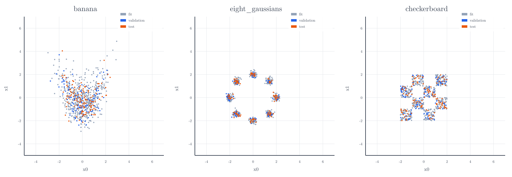
#include <dm/dm.hpp>
int main(){
namespace n=dm::nn;auto layout=dm::graphics::RLayout::create(1,3);int kind=0;
std::print("| Family | Final model | Full Gaussian | Diagonal Gaussian | Identity | Truth |\n|---|---:|---:|---:|---:|---:|\n");
for(auto family:{"banana","eight_gaussians","checkerboard"}){std::string root=std::string("build/flow_density_2d/")+family+"/";std::map<std::string,n::Tensor> out,v;
for(auto& [k,x]:n::load_npz(root+"outputs.npz"))out[k]=x;for(auto& [k,x]:n::load_npz(root+"plot_values.npz"))v[k]=x;
auto serial=[](const n::Tensor& x){return n::select(n::cumsum(x/double(x.size(0)),0),0,x.size(0)-1).item();};
std::ifstream f(root+"history.tsv");std::string header;std::getline(f,header);std::vector<double> epoch,loss;double e,l,d;while(f>>e>>l>>d){epoch.push_back(e);loss.push_back(l);}
double full=serial(v.at("full_gaussian_point_nll")),diag=serial(v.at("diagonal_gaussian_point_nll")),identity=serial(v.at("identity_point_nll")),truth=serial(v.at("true_point_nll"));
auto p=dm::graphics::RPlot::create();p.lines(epoch,loss,"Validation model",{37,99,235}).lines({1,3},{full,full},"Test full Gaussian",{220,38,38}).lines({1,3},{diag,diag},"Test diagonal",{234,88,12}).lines({1,3},{identity,identity},"Test identity",{100,116,139}).lines({1,3},{truth,truth},"Test truth",{22,163,74}).points({3},{out.at("loss").item()},"Final test model",{126,34,206},5)
.margins(90,24,54,80).y_limits(kind==0?2.5:kind==1?.5:1.8,kind==0?3.4:kind==1?4.9:4.7).x_label("Fixed fitting epoch").y_label("NLL, nats per row").title(family);layout.add(p);++kind;
std::print("|{}|{:.12f}|{:.12f}|{:.12f}|{:.12f}|{:.12f}|\n",family,out.at("loss").item(),full,diag,identity,truth);}
layout.size(1650,640).fit_panels().save_svg("build/study_history.svg");
}| Family | Final model | Full Gaussian | Diagonal Gaussian | Identity | Truth |
|---|---|---|---|---|---|
| banana | 2.760811805725 | 2.837374308429 | 2.837209148223 | 2.816601085414 | 2.676297399142 |
| eight_gaussians | 3.523986816406 | 3.530117591978 | 3.531341270647 | 3.832852845674 | 0.961499011866 |
| checkerboard | 3.139697790146 | 3.139320069824 | 3.136656743281 | 3.186999588593 | 2.079441541680 |
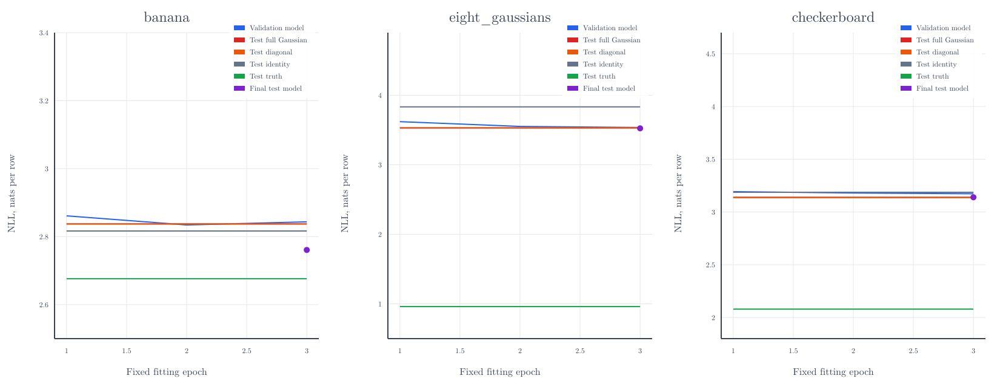
The banana model improves over its full Gaussian baseline 2.837374308, but its curvature moment remains.719403856 instead of the true expectation 1. The eight-mode model's NLL is only slightly below the Gaussian 3.530117592, far from truth .961499012. Checkerboard NLL is slightly worse than the full Gaussian 3.139320070, with truth 2.079441542. No significance interval or broad ranking claim follows from one short fit and 128 held-out observations.
Compare each true and learned PDF without hiding support zeros
Each pair retains all 128² source grid centers on[-4,4]². Source rows descend in y; plotting reverses storage order to keep physical y upward. Both panels of a family use the same native terrain palette and limits: 0 to 0.2 for banana and checker,0 to 1 for the ring. Square cells preserve geometry. The finite window is a display, not a claim of unit probability within the box.
#include <dm/dm.hpp>
int main(){
namespace n=dm::nn;auto layout=dm::graphics::RLayout::create(3,2);int kind=0;
std::vector<double> axis;for(int i=0;i<128;++i)axis.push_back((i+.5)/16-4);
for(auto family:{"banana","eight_gaussians","checkerboard"}){std::map<std::string,n::Tensor> data;for(auto& [k,v]:n::load_npz(std::string("build/flow_density_2d/")+family+"/grid.npz"))data[k]=v;
for(auto key:{"true_log_probability","model_log_probability"}){auto pdf=n::exp(data.at(key)).to_vector<double>();std::vector<std::vector<double>> z(128,std::vector<double>(128));for(int x=0;x<128;++x)for(int y=0;y<128;++y)z[x][y]=pdf[(127-y)*128+x];
auto p=dm::graphics::RPlot::create();p.image(axis,axis,z,dm::graphics::terrain_colors(32),0,kind==1?1.:.2).margins(72,22,54,64).x_limits(-4,4).y_limits(-4,4).x_label("x0").y_label("x1").title(std::string(family)+(std::string(key)=="true_log_probability"?": analytic PDF":": final model PDF"));layout.add(p);}
++kind;}
layout.size(1100,1722).fit_panels().save_svg("build/study_density.svg");
}
Keep every generated point and latent point visible
Each observation panel overlays all 1,024 inverse samples with 128 original held-out points. Each latent panel uses all 1,024 common Gaussian draws and 128 transformed held-out points. Identical prior rows make differences in generated samples consequences of the separate learned maps. These views do not pair independent test observations with particular prior draws.
#include <dm/dm.hpp>
int main(){
namespace n=dm::nn;auto layout=dm::graphics::RLayout::create(1,3);
for(auto family:{"banana","eight_gaussians","checkerboard"}){std::string root=std::string("build/flow_density_2d/")+family+"/";std::map<std::string,n::Tensor> a,b;
for(auto& [k,v]:n::load_npz(root+"samples.npz"))a[k]=v;for(auto& [k,v]:n::load_npz(root+"data.npz"))b[k]=v;auto x=a.at("samples"),y=b.at("test_points");
auto p=dm::graphics::RPlot::create();p.points(n::select(x,1,0).to_vector<double>(),n::select(x,1,1).to_vector<double>(),"Inverse samples",{148,163,184},2).points(n::select(y,1,0).to_vector<double>(),n::select(y,1,1).to_vector<double>(),"Held-out test",{234,88,12},3)
.margins(78,22,54,70).x_limits(-5,7).y_limits(-5,7).x_label("Coordinate0").y_label("Coordinate1").title(std::string(family)+":Observation space");layout.add(p);}
layout.size(1650,574).fit_panels().save_svg("build/study_samples.svg");
}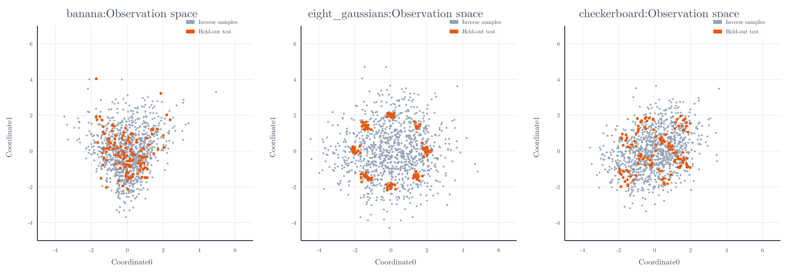
#include <dm/dm.hpp>
int main(){
namespace n=dm::nn;auto layout=dm::graphics::RLayout::create(1,3);
for(auto family:{"banana","eight_gaussians","checkerboard"}){std::string root=std::string("build/flow_density_2d/")+family+"/";std::map<std::string,n::Tensor> a,b;
for(auto& [k,v]:n::load_npz(root+"samples.npz"))a[k]=v;for(auto& [k,v]:n::load_npz(root+"outputs.npz"))b[k]=v;auto x=a.at("prior"),y=b.at("latent");
auto p=dm::graphics::RPlot::create();p.points(n::select(x,1,0).to_vector<double>(),n::select(x,1,1).to_vector<double>(),"Gaussian prior",{148,163,184},2).points(n::select(y,1,0).to_vector<double>(),n::select(y,1,1).to_vector<double>(),"Transformed test",{234,88,12},3)
.margins(78,22,54,70).x_limits(-5,7).y_limits(-5,7).x_label("Coordinate0").y_label("Coordinate1").title(std::string(family)+":Latent space");layout.add(p);}
layout.size(1650,574).fit_panels().save_svg("build/study_latent.svg");
}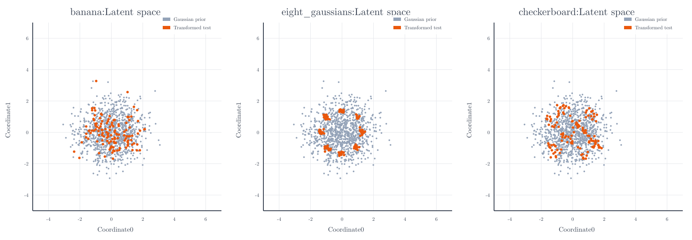
Measure concentration and leakage instead of counting modes alone
All diagnostics are computed for every fitted family. Nearest ring centers use Double hypot; strict comparisons choose the first exact tie. Count a sample when distance<=.45 (three component standard deviations). Eight positive counts only establishes visitation: the ring fit covers all eight modes but puts just 161/1024 samples within that radius. Checker support fraction is 436/1024; 588 generated points fall outside the valid cells. Its smooth bijective flow cannot exactly reproduce disconnected zero-density regions. The budget also leaves a large empirical mismatch. Banana curvature is mean[y(x²−1)], with true expectation 1. No rejection, filtering or post-fit correction changes the saved samples or scores.
#include <dm/dm.hpp>
int main(){
namespace n=dm::nn;auto p=dm::graphics::RPlot::create();std::vector<dm::graphics::RGB> colors{{37,99,235},{234,88,12},{22,163,74}};int i=0;
std::print("| Fitted family | Checker support | Ring fraction within.45 | Modes covered | Banana moment |\n|---|---:|---:|---:|---:|\n");
for(auto family:{"banana","eight_gaussians","checkerboard"}){n::Tensor samples;for(auto& [k,v]:n::load_npz(std::string("build/flow_density_2d/")+family+"/samples.npz"))if(k=="samples")samples=v;
auto d=n::models::FlowStudySampleDiagnostics(samples);auto x=n::arange(0,8).to_vector<double>(),y=d.mode_counts.to_vector<double>();p.lines(x,y,family,colors[i]).points(x,y,"",colors[i++],4);
std::print("|{}|{:.12f}|{:.12f}|{}|{:.12f}|\n",family,d.checkerboard_support_fraction,d.fraction_near_modes,d.modes_covered,d.banana_curvature_moment);}
p.y_limits(0,65).x_label("Nearest ring center index").y_label("Number of samples within.45").title("Every family visits all modes; concentration remains low").save_svg("build/study_quality.svg");
}| Fitted family | Checker support | Ring fraction within.45 | Modes covered | Banana moment |
|---|---|---|---|---|
| banana | 0.418945312500 | 0.134765625000 | 8 | 0.719403856091 |
| eight_gaussians | 0.342773437500 | 0.157226562500 | 8 | -0.127649721802 |
| checkerboard | 0.425781250000 | 0.139648437500 | 8 | 0.056048572561 |
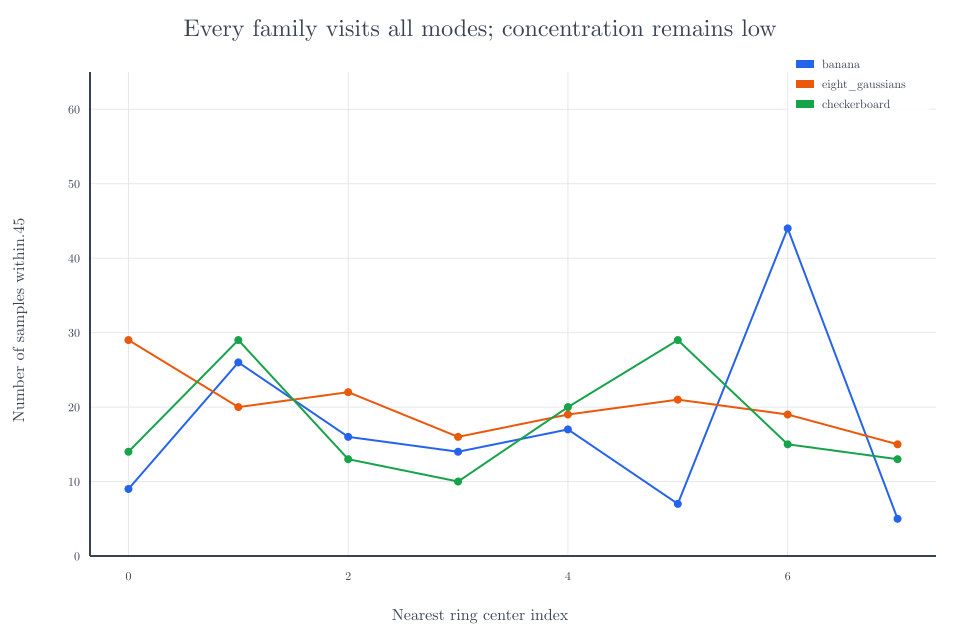
Check per-point volume changes, both actual Jacobians and normalization
The next figure retains both analytic and actual log determinants on all 128 held-out points and all 1,024 inverse samples per family. Forward and inverse have their own row ordering; their profiles are not corresponding pairs. Reverse-mode derivatives of both output coordinates determine the actual 2x2 Jacobians. Positive determinants, per-point cancellation on reconstruction, roundtrips, bit-exact restore, repeated samples and immutable inference are checked by the complete program. Source phase probes additionally retain every gradient, post-write weight and optimizer iteration.
#include <dm/dm.hpp>
int main(){
namespace n=dm::nn;auto layout=dm::graphics::RLayout::create(3,2);
for(auto family:{"banana","eight_gaussians","checkerboard"}){std::string root=std::string("build/flow_density_2d/")+family+"/";std::map<std::string,n::Tensor> o,s,v;
for(auto& [k,x]:n::load_npz(root+"outputs.npz"))o[k]=x;for(auto& [k,x]:n::load_npz(root+"samples.npz"))s[k]=x;for(auto& [k,x]:n::load_npz(root+"plot_values.npz"))v[k]=x;
for(bool inverse:{false,true}){auto analytic=inverse?s.at("inverse_logdet"):o.at("forward_logdet"),actual=v.at(inverse?"inverse_actual_logdet":"actual_logdet");auto axis=n::arange(0,analytic.size(0)).to_vector<double>();
auto p=dm::graphics::RPlot::create();p.points(axis,analytic.to_vector<double>(),"Analytic path",{37,99,235},3).points(axis,actual.to_vector<double>(),"Actual Jacobian",{234,88,12},1)
.margins(72,22,54,64).y_limits(-1.1,1.6).x_label("Row index in its own pool").y_label("Log absolute determinant").title(std::string(family)+(inverse?":inverse1024":":forward128"));layout.add(p);}}
layout.size(1100,1500).fit_panels().save_svg("build/study_volume.svg");
}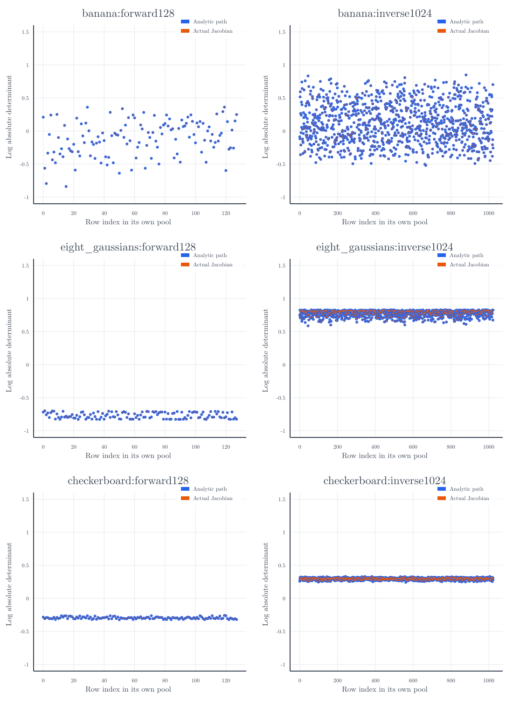
#include <dm/dm.hpp>
int main(){
namespace n=dm::nn;auto layout=dm::graphics::RLayout::create(1,3);
for(auto family:{"banana","eight_gaussians","checkerboard"}){std::string root=std::string("build/flow_density_2d/")+family+"/";std::map<std::string,n::Tensor> o,s,v;
for(auto& [k,x]:n::load_npz(root+"outputs.npz"))o[k]=x;for(auto& [k,x]:n::load_npz(root+"samples.npz"))s[k]=x;for(auto& [k,x]:n::load_npz(root+"plot_values.npz"))v[k]=x;
auto forward=(v.at("actual_logdet")-n::cast(o.at("forward_logdet"),n::DType::Float64))*1e7,inverse=(v.at("inverse_actual_logdet")-n::cast(s.at("inverse_logdet"),n::DType::Float64))*1e7;
auto p=dm::graphics::RPlot::create();p.points(n::arange(0,128).to_vector<double>(),forward.to_vector<double>(),"Forward128",{37,99,235},3).points(n::arange(0,1024).to_vector<double>(),inverse.to_vector<double>(),"Inverse1024",{234,88,12},2)
.margins(78,22,54,70).y_limits(-4,6).x_label("Original pool row index").y_label("(Actual-analytic logdet) x1e7").title(family);layout.add(p);}
layout.size(1650,620).fit_panels().save_svg("build/study_jacobians.svg");
}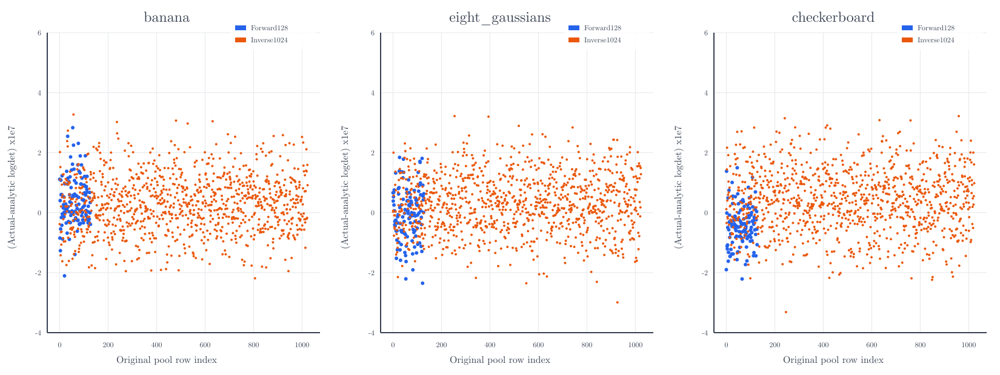
#include <dm/dm.hpp>
int main(){
namespace n=dm::nn;auto layout=dm::graphics::RLayout::create(1,3);
std::print("| Family | inverse(forward(test)) max | forward(inverse(prior)) max | Normalization max |\n|---|---:|---:|---:|\n");
for(auto family:{"banana","eight_gaussians","checkerboard"}){std::map<std::string,n::Tensor> v;for(auto& [k,x]:n::load_npz(std::string("build/flow_density_2d/")+family+"/plot_values.npz"))v[k]=x;
auto error=v.at("normalization_error");auto p=dm::graphics::RPlot::create();p.points(n::arange(0,1024).to_vector<double>(),(error*1e6).to_vector<double>(),"All1024 prior rows",{37,99,235},2)
.margins(78,22,54,70).y_limits(0,4).x_label("Original prior row index").y_label("Absolute log identity residual x1e6").title(family);layout.add(p);
std::print("|{}|{:.12g}|{:.12g}|{:.12g}|\n",family,n::max(v.at("forward_roundtrip_absolute_error")).item(),n::max(v.at("inverse_roundtrip_absolute_error")).item(),n::max(error).item());}
layout.size(1650,620).fit_panels().save_svg("build/study_normalization.svg");
}| Family | inverse(forward(test)) max | forward(inverse(prior)) max | Normalization max |
|---|---|---|---|
| banana | 4.76837158203e-07 | 4.76837158203e-07 | 1.76947291219e-06 |
| eight_gaussians | 3.57627868652e-07 | 7.15255737305e-07 | 2.17099107047e-06 |
| checkerboard | 2.38418579102e-07 | 7.15255737305e-07 | 1.57494462272e-06 |
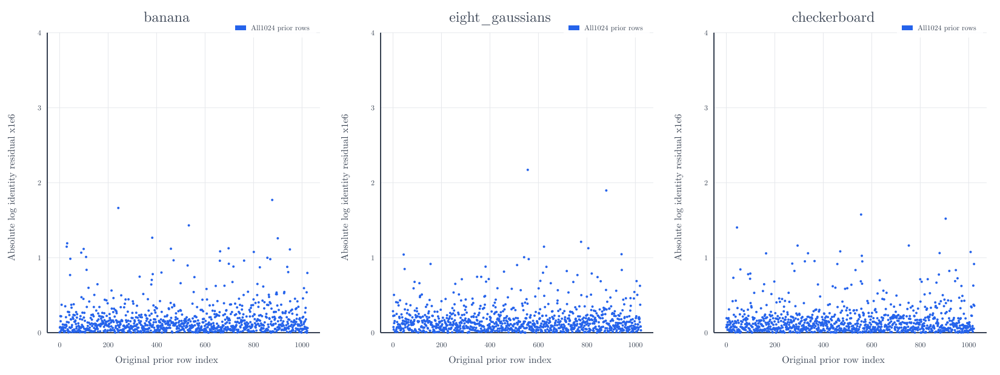
Read the controlled experiment at its actual scope
All 66 source archives,433,485 values, all 432 phase archives,76,752 phase values, all histories, protocols, quality JSON and summary rows reproduce exactly. The independent NumPy audit reconstructs every 3D Box-Muller observation and source ID, derives both map Jacobians and coupling pullbacks, verifies all 144 Adam writes, checks all 798 model-parameter coordinates by finite differences, and audits all 3,072 inverse samples. It reconstructs all analytic grid densities, including 14,336 legitimate off-support checker zeros. It neither calls native model math nor refits replacement data.
The comparison holds architecture, initialization, batch order and budget constant while changing the analytic law. It shows useful banana bending, weak eight-mode concentration and substantial checkerboard leakage. None of these outcomes is repaired by silently extending the schedule, changing model size, filtering samples or replacing the original data. A larger or differently selected experiment would need separate evidence.